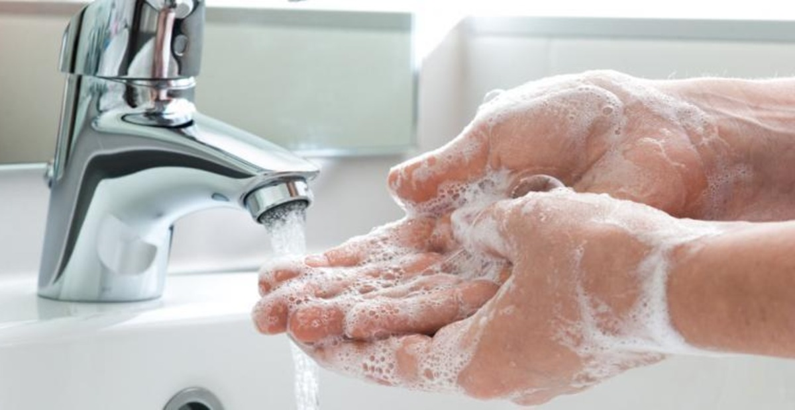
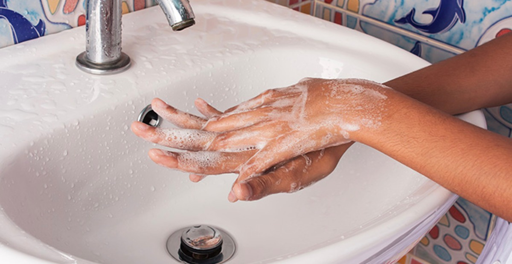
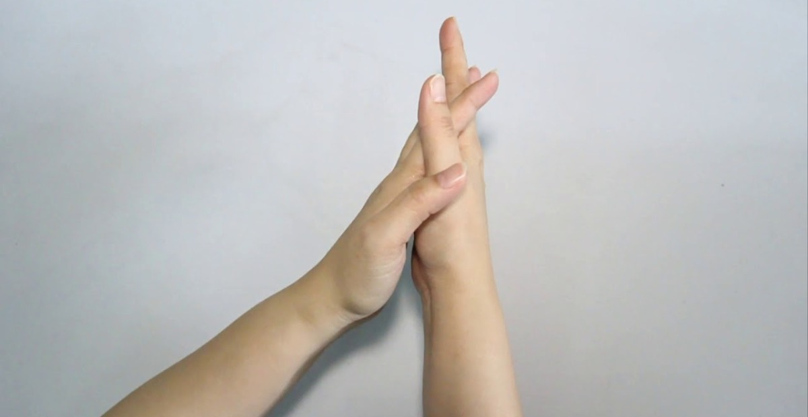
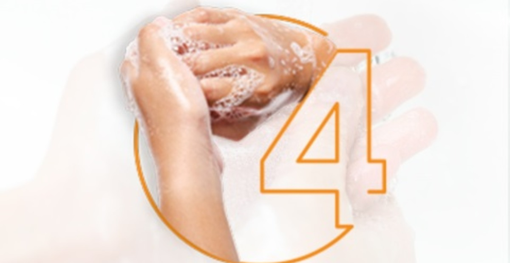
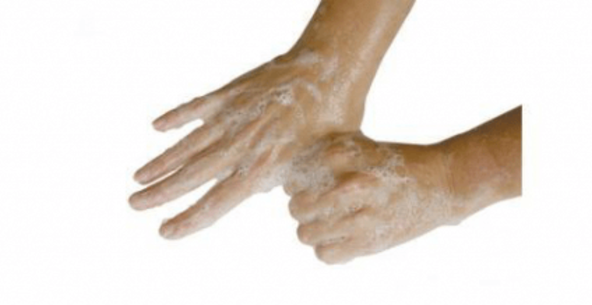
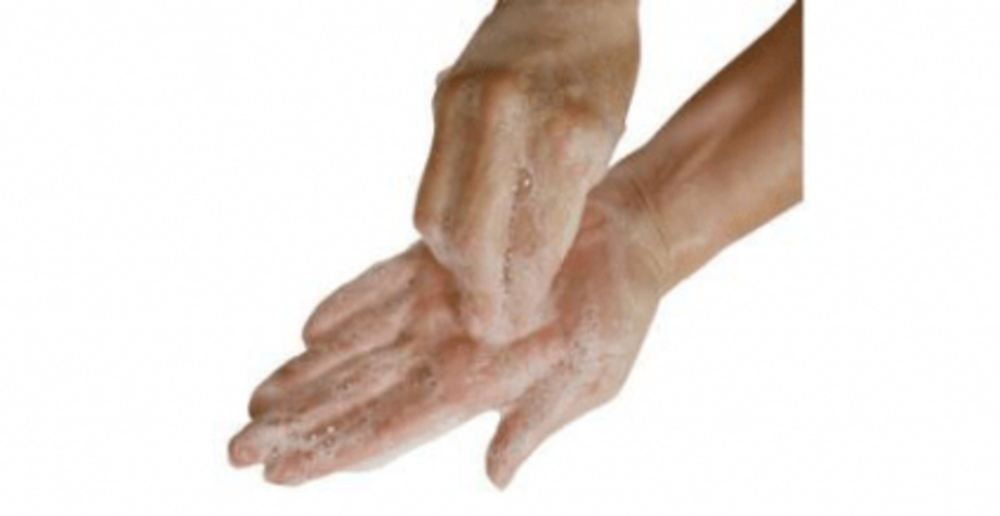
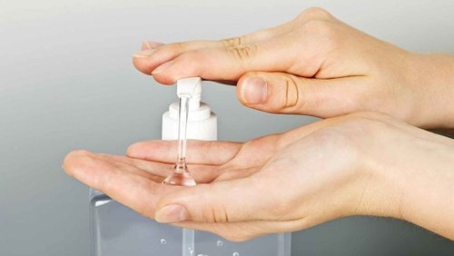
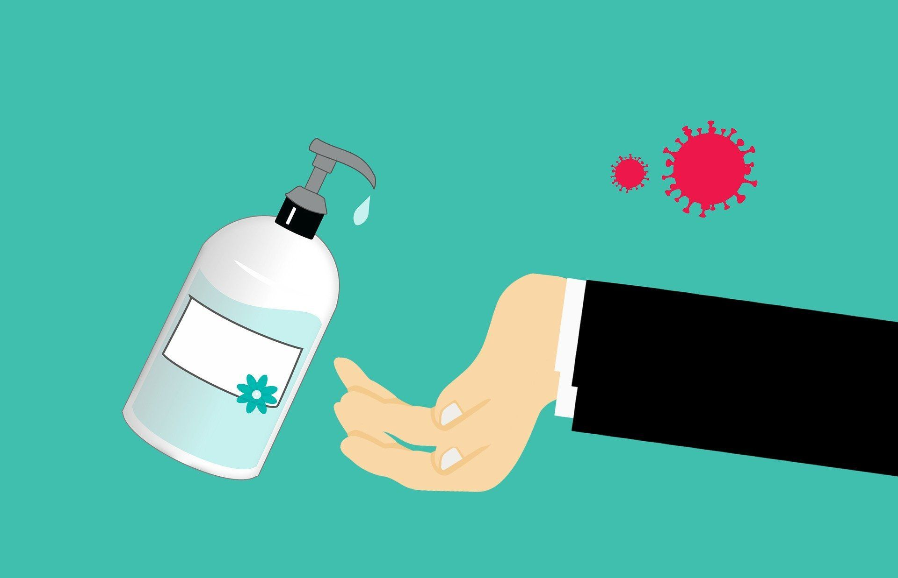

Rekomendasi Langkah Cara Cuci Tangan untuk Mencegah COVID-19
6 Langkah Cara Cuci Tangan dengan Tepat yang Sesuai Anjuran Kemenkes (Kementrian Kesehatan)
- Gosok Telapak dengan Telapak

Bagian telapak tangan bisa jadi mengandung banyak kuman dan bakteri. Saat Anda berkeringat, keringat bisa berkumpul di telapak tangan. Jika dibiarkan, bakteri atau kuman yang menempel bisa terus berkembang biak. Telapak tangan juga adalah bagian utama yang bersentuhan dengan benda dan sumber kotoran. Saling gosokan telapak tangan yang satu dengan telapak tangan lainnya untuk menghilangkan bakteri.
- Gosok Telapak Kanan di Atas Punggung Tangan Kiri & Sebaliknya

Punggung tangan juga berpotensi menyimpan kuman dan kotoran. Oleh karena itu, membersihkan punggung tangan juga tak boleh dilewatkan saat Anda sedang mencuci tangan. Untuk membersihkannya, Anda bisa menggosok punggung tangan kiri dengan telapak tangan kanan. Sebaliknya, punggung tangan kanan dibersihkan dengan cara digosok menggunakan telapak tangan kiri.
- Gosok Telapak & Telapak, dengan Jari Saling Terkait

Langkah ini dilakukan untuk membersihkan kotoran atau bakteri yang ada di sela-sela jari. Rapatkan kedua telapak tangan, lalu saling kaitkan jari layaknya orang tengah berdoa. Selanjutnya, saling gosok sela-sela jari tersebut.
- Putar Punggung Jari di Atas Telapak

Langkah ini dilakukan untuk membersihkan kotoran atau bakteri yang ada di sela-sela jari. Rapatkan kedua telapak tangan, lalu saling kaitkan jari layaknya orang tengah berdoa. Selanjutnya, saling gosok sela-sela jari tersebut.
- Jempol Kanan Digosok Memutar oleh Telapak Kiri & Sebaliknya

Langkah ini dilakukan untuk memastikan bahwa kuman dan kotoran yang ada di sekeliling jempol ikut terbilas. Sela-sela jempol adalah bagian yang paling sering bersentuhan dengan benda asing, sehingga tak boleh luput untuk ikut dibersihkan. Cara melakukan langkah ini adalah dengan menggenggam jempol kiri menggunakan telapak tangan kanan. Gosok memutar selama beberapa kali, lalu lakukan untuk tangan sebaliknya. Yakni giliran jempol kanan yang digosok memutar menggunakan telapak tangan kiri.
- Kuncupkan Jari dan Putar di Atas Telapak Tangan

Pada tangan, kuku jari juga menjadi salah satu bagian yang rawan menjadi sarang kuman. Untuk itu, Anda perlu membersihkannya saat sedang mencuci tangan. Caranya, kuncupkan jari tangan kanan di atas telapak tangan kiri, lalu putar selama beberapa kali. Lakukan hal yang sama untuk tangan sebaliknya. Langkah cuci tangan yang bermanfaat membersihkan daerah kuku ini tentu akan semakin efektif jika kuku berada dalam kondisi pendek dan rajin dipotong.
Setelah semua langkah cuci tangan tersebut sudah rampung dilakukan dan seluruh bagian tangan sudah digosok bersih, saatnya membilas kembali sisa sabun dengan air mengalir. Bilas tangan hingga tak ada busa sabun cuci tangan yang tersisa. Lalu, keringkan tangan dengan handuk bersih atau tisu kering. Agar higienitas tangan tetap terjaga, matikan keran dengan siku tangan atau handuk agar kuman yang menempel di keran tidak mencemari tangan yang sudah bersih.
Hand Sanitizer sebagai Alternatif dari Cuci Tangan dalam Mencegah COVID-19
- Apa itu Hand Sanitizer?

Hand Sanitizer menjadi alternatif untuk membersihkan tangan di kala tidak ada air dan sabun. Cara penggunaan hand sanitizer dengan menuangkan ke seluruh bagian tangan, Lalu gosokan pada seputaran tangan termasuk sela-sela jari selama 20 detik. Setelah hand sanitizer diusap pada tangan, biarkan mengering sendiri.
- Berapa Kadar Alkohol yang Sesuai?

Para ahli telah mengatakan hand sanitizer yang memenuhi standar untuk melawan virus, yakni mengandung alkohol 60-80 persen. Hand sanitizer dengan kadar alkohol setingkat itulah yang seharusnya Anda beli. "Hand sanitizer berbasis alkohol tinggi paling efektif dalam membunuh virus, tidak hanya bakteri," kata Profesor McLachlan.
- Kesimpulan

Kita tetap harus menjaga kesehatan setiap hari, mulai dari jaga kebersihan, olahraga, makanan, dll. Tetap mengikuti protokol kesehatan tetap jaga jarak aman 1 sampai 2 meter dan menghindari kerumunan sebisa mungkin. Membawa perlengkapan pribadi seperti masker,hand sanitizer, dll. Dan jangan keluar rumah tidak memang tidak penting.